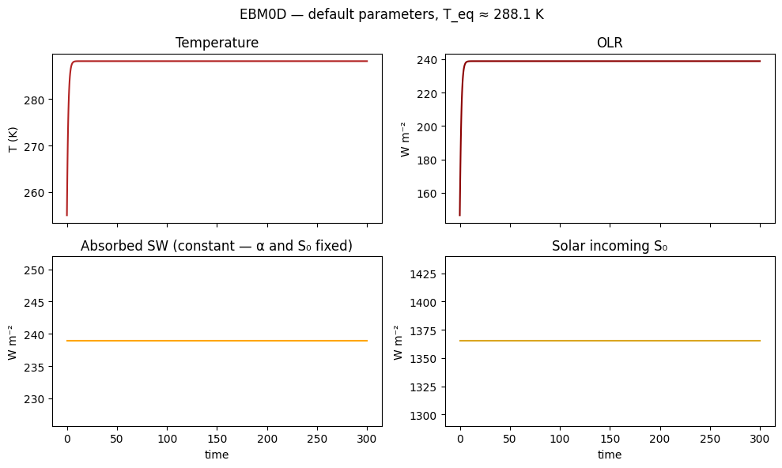
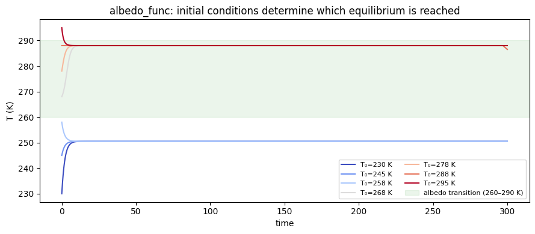
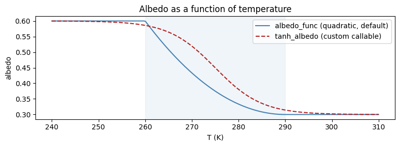
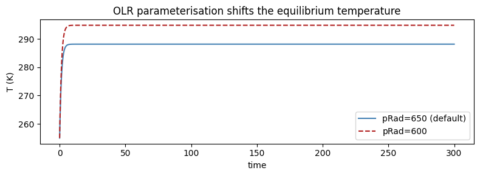
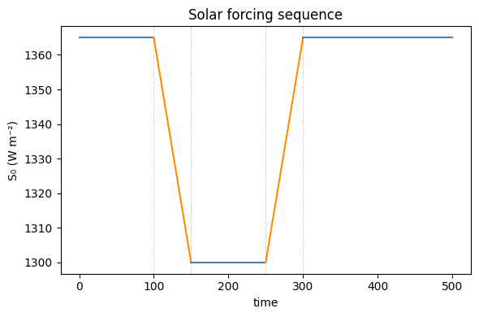
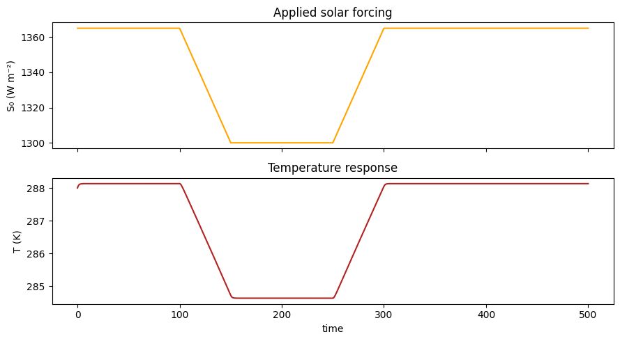
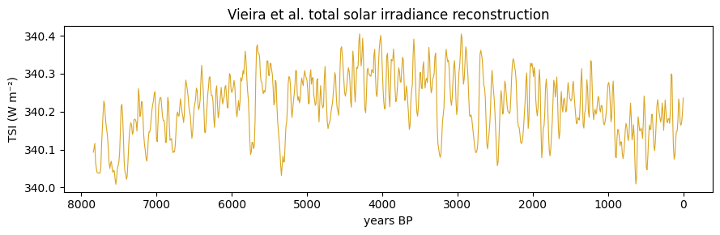
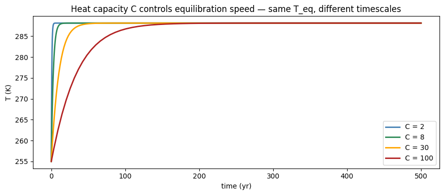
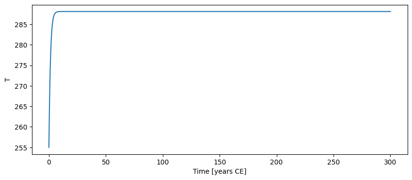

import numpy as np
import matplotlib.pyplot as plt
import climatecritters as cc
from climatecritters.model_critters.ebm import EBM0D, OLR_func, albedo_funcEBM0D — Zero-Dimensional Energy Balance Model
Abstract
EBM0D is a single-compartment global energy balance model that balances incoming solar radiation against outgoing longwave radiation via Stefan-Boltzmann OLR. This notebook demonstrates equilibration, ice-albedo bistability, custom albedo callables, solar constant forcing using both parameterized and bundled TSI datasets, and how heat capacity controls the system’s thermal inertia.
Keywords
EBM0D, energy balance, albedo, ice-albedo feedback, bistability, OLR, solar forcing, heat capacity, Stefan-Boltzmann, TSI
Parameters
| Parameter | Default | Accepted types | Description |
|---|---|---|---|
S0 |
1365.0 |
float, callable, cc.Forcing |
Total solar irradiance (W m⁻²) |
C |
4 |
float, callable, cc.Forcing |
Heat capacity (W yr m⁻² K⁻¹) — controls equilibration timescale |
albedo |
0.3 |
float, callable, cc.Forcing |
Planetary albedo — use albedo_func for temperature-dependent ice-albedo feedback |
OLR |
OLR_func() |
callable, cc.Forcing |
Outgoing longwave radiation — default is Stefan-Boltzmann at an effective emission level set by pRad=650 hPa |
The state variable is T (global-mean temperature, K). Diagnostics recorded at each timestep: albedo, absorbed_SW, OLR, solar_incoming.
Basic run
# Instantiate with all defaults: S0=1365, alpha=0.3, Stefan-Boltzmann OLR
model = EBM0D()
# Integrate from a cold start (255 K) to equilibrium
output = model.integrate(t_span=(0, 300), y0=[255.0], method='RK45')# Unpack the arrays we will use throughout the notebook
time = output.time
T = output.state_variables['T']
albedo_diag = output.diagnostic_variables['albedo']
sw_diag = output.diagnostic_variables['absorbed_SW']
olr_diag = output.diagnostic_variables['OLR']
solar_diag = output.diagnostic_variables['solar_incoming']
fig, axes = plt.subplots(2, 2, figsize=(10, 6), sharex=True)
axes[0, 0].plot(time, T, color='firebrick')
axes[0, 0].set_ylabel('T (K)'); axes[0, 0].set_title('Temperature')
axes[0, 1].plot(time, olr_diag, color='darkred')
axes[0, 1].set_ylabel('W m⁻²'); axes[0, 1].set_title('OLR')
axes[1, 0].plot(time, sw_diag, color='orange')
axes[1, 0].set_ylabel('W m⁻²'); axes[1, 0].set_title('Absorbed SW (constant — α and S₀ fixed)')
axes[1, 0].set_xlabel('time')
axes[1, 1].plot(time, solar_diag, color='goldenrod')
axes[1, 1].set_ylabel('W m⁻²'); axes[1, 1].set_title('Solar incoming S₀')
axes[1, 1].set_xlabel('time')
fig.suptitle(f"EBM0D — default parameters, T_eq ≈ {T[-1]:.1f} K")
plt.tight_layout(); plt.show()
Figure. Starting from 255 K, the model equilibrates at ~288 K in ~100 yr. Top-left: temperature relaxes smoothly to the fixed point. Top-right: OLR rises as the planet warms, eventually balancing absorbed shortwave. Bottom-left: absorbed shortwave is constant (fixed α = 0.3 and S₀ = 1365). Bottom-right: solar incoming is likewise constant — no forcing attached.
Albedo
albedo controls how much shortwave is reflected. It accepts three forms.
1. Constant float (default 0.3)
Fixed reflectivity — a single radiative equilibrium exists.
2. albedo_func — built-in temperature-dependent feedback
albedo_func implements a quadratic ice-albedo transition:
- T < 260 K → α = 0.6 (ice-covered)
- T > 290 K → α = 0.3 (ice-free)
- Quadratic blend in between
The thresholds can be shifted with a lambda wrapper:
albedo=lambda t, state: albedo_func(t, state, T1=255., T2=285.)With albedo_func the model has two stable equilibria. Which one you land on depends entirely on the initial condition. Running from several starting temperatures makes this clear:
# --- setup: multiple initial conditions with albedo_func ---
initial_temps = [230, 245, 258, 268, 278, 288, 295] # K
runs = []
for T0 in initial_temps:
m = EBM0D(albedo=albedo_func)
out = m.integrate(t_span=(0, 300), y0=[T0], method='RK45')
runs.append((T0, out))# --- plot: each IC traces to one of two equilibria ---
fig, ax = plt.subplots(figsize=(9, 4))
colors = plt.cm.coolwarm(np.linspace(0, 1, len(initial_temps)))
for (T0, out), c in zip(runs, colors):
t_run = out.time
T_run = out.state_variables['T']
ax.plot(t_run, T_run, color=c, label=f'T₀={T0} K')
# Mark the transition zone where albedo blends
ax.axhspan(260, 290, alpha=0.08, color='green', label='albedo transition (260–290 K)')
ax.set_xlabel('time'); ax.set_ylabel('T (K)')
ax.set_title('albedo_func: initial conditions determine which equilibrium is reached')
ax.legend(fontsize=8, ncol=2); plt.tight_layout(); plt.show()
Figure. Multiple initial conditions reveal two stable equilibria separated by a tipping point. Cold starts (blue) are attracted to the snowball state (~230 K); warm starts (red) settle at the temperate state (~288 K). The shaded band (260–290 K) is the albedo transition zone — initial conditions within it can go either way depending on the exact value.
3. Custom callable
Any function with signature (t), (t, state), or (t, state, model) — first argument must be named t or time. The dispatcher inspects the signature automatically.
# --- setup: smooth tanh albedo transition ---
def tanh_albedo(t, state):
"""Smooth albedo: α ranges from 0.6 (cold) to 0.3 (warm),
centred on 275 K with a 10 K width."""
T = float(np.asarray(state).reshape(-1)[0])
return 0.45 - 0.15 * np.tanh((T - 275.0) / 10.0)
# Show the functional form before integrating
T_range = np.linspace(240, 310, 200)
alb_tanh = [tanh_albedo(0, [T]) for T in T_range]
alb_builtin = [albedo_func(0, [T]) for T in T_range]# --- plot: compare albedo functions ---
fig, ax = plt.subplots(figsize=(8, 3))
ax.plot(T_range, alb_builtin, color='steelblue', label='albedo_func (quadratic, default)')
ax.plot(T_range, alb_tanh, color='firebrick', ls='--', label='tanh_albedo (custom callable)')
ax.axvspan(260, 290, alpha=0.08, color='steelblue')
ax.set_xlabel('T (K)'); ax.set_ylabel('albedo')
ax.set_title('Albedo as a function of temperature'); ax.legend(); plt.tight_layout(); plt.show()
Figure. Default (quadratic) vs custom (tanh) albedo as a function of temperature. Both switch from high-albedo (ice) to low-albedo (no ice) across a similar temperature range, but the tanh transition is sharper — a narrower bistable zone and a more abrupt tipping point.
# --- integrate with custom albedo ---
model_tanh = EBM0D(albedo=tanh_albedo)
out_tanh = model_tanh.integrate(t_span=(0, 300), y0=[255.0], method='RK45')
t_tanh = out_tanh.time
T_tanh = out_tanh.state_variables['T']
print(f"tanh_albedo equilibrium: T = {T_tanh[-1]:.1f} K")tanh_albedo equilibrium: T = 250.9 KOLR
The default OLR applies Stefan-Boltzmann at an effective emission level set by a dry-adiabatic pressure ratio. OLR_func(pRad, ps) returns the callable. Lower pRad means emission from higher, colder air → less OLR → warmer equilibrium.
# --- setup: compare two OLR parameterisations ---
model_olr600 = EBM0D(OLR=OLR_func(pRad=600)) # higher emission level
out_olr600 = model_olr600.integrate(t_span=(0, 300), y0=[255.0], method='RK45')
t6 = out_olr600.time
T6 = out_olr600.state_variables['T']
print(f"pRad=650 (default): T_eq = {T[-1]:.1f} K")
print(f"pRad=600: T_eq = {T6[-1]:.1f} K")pRad=650 (default): T_eq = 288.1 K
pRad=600: T_eq = 294.8 K# --- plot: equilibrium temperatures side by side ---
fig, ax = plt.subplots(figsize=(8, 3))
ax.plot(time, T, color='steelblue', label='pRad=650 (default)')
ax.plot(t6, T6, color='firebrick', ls='--', label='pRad=600')
ax.set_xlabel('time'); ax.set_ylabel('T (K)')
ax.set_title('OLR parameterisation shifts the equilibrium temperature')
ax.legend(); plt.tight_layout(); plt.show()
Figure. A lower effective emission level (pRad=600 hPa vs default 650 hPa) means radiation escapes from a colder, higher layer — the planet must warm further to achieve radiative balance. The equilibrium temperature shifts from ~288 K to ~292 K.
Solar forcing: time-varying S₀
Forcings are attached after construction via register_forcing('S0', forcing_obj). Because S0 is a parameter, the default style is 'replacement' — the forcing value replaces S0 at each solver evaluation.
See the Forcing notebook for a full treatment of all construction patterns (Hold, Ramp, Harmonic, array, callable, from_csv).
A quick example with a solar dimming–recovery sequence:
# Build a solar dimming-recovery sequence and plot it before running
solar_seq = (
cc.forcing.Hold(duration=100, value=1365.0)
+ cc.forcing.Ramp(duration=50, y0=1365.0, yf=1300.0)
+ cc.forcing.Hold(duration=100, value=1300.0)
+ cc.forcing.Ramp(duration=50, y0=1300.0, yf=1365.0)
+ cc.forcing.Hold(duration=200, value=1365.0)
)
fig, ax = solar_seq.plot()
ax.set_ylabel('S₀ (W m⁻²)'); ax.set_title('Solar forcing sequence')
plt.tight_layout(); plt.show()
# Attach to S0 and integrate
model_solar = EBM0D()
model_solar.register_forcing('S0', solar_seq.compile())
out_solar = model_solar.integrate(t_span=(0, 500), y0=[288.0], method='RK45')
time_s = out_solar.time
T_s = out_solar.state_variables['T']
solar_s = out_solar.diagnostic_variables['solar_incoming']
fig, axes = plt.subplots(2, 1, figsize=(9, 5), sharex=True)
axes[0].plot(time_s, solar_s, color='orange')
axes[0].set_ylabel('S₀ (W m⁻²)'); axes[0].set_title('Applied solar forcing')
axes[1].plot(time_s, T_s, color='firebrick')
axes[1].set_ylabel('T (K)'); axes[1].set_xlabel('time')
axes[1].set_title('Temperature response')
plt.tight_layout(); plt.show()
Figure. Top: solar_incoming diagnostic confirms the forcing is correctly applied — the ramp-down and ramp-up are clearly visible. Bottom: temperature tracks the forcing with a lag set by the heat capacity. The ~4 K cooling during the dimmed phase and subsequent recovery illustrate the model’s sensitivity to solar variability.
Bundled dataset: from_csv
'vieira_tsi' provides total solar irradiance reconstructed over the last millennium (time in years BP):
# --- load the Vieira TSI dataset ---
solar_vieira = cc.Forcing.from_csv(dataset='vieira_tsi')
print(f"Dataset span: {solar_vieira.time.min():.0f} – {solar_vieira.time.max():.0f} yr BP")
print(f"S0 range: {solar_vieira.data.min():.2f} – {solar_vieira.data.max():.2f} W m⁻²")Dataset span: 0 – 7840 yr BP
S0 range: 340.01 – 340.41 W m⁻²# --- plot the dataset ---
fig, ax = plt.subplots(figsize=(9, 3))
ax.plot(solar_vieira.time, solar_vieira.data, color='goldenrod', lw=0.8)
ax.invert_xaxis() # BP convention: older on the right
ax.set_xlabel('years BP'); ax.set_ylabel('TSI (W m⁻²)')
ax.set_title('Vieira et al. total solar irradiance reconstruction')
plt.tight_layout(); plt.show()
Figure. Vieira et al. total solar irradiance reconstruction over the Common Era (~850–2000 CE). Prominent features: the Medieval Grand Maximum (~1000 CE), the Maunder Minimum (~1650 CE), and the modern uptick. Variability is small (~1–2 W m⁻²) but sufficient to drive ~0.1–0.2 K global mean temperature fluctuations in the EBM0D.
Time-evolving parameters
Any param_values entry can be a callable: (t), (t, state), or (t, state, model).
C (heat capacity) controls the speed of equilibration — not the equilibrium temperature itself. The cleanest way to see this is to compare several constant C values all starting from the same initial condition. With Stefan-Boltzmann OLR the timescale is roughly τ ≈ C / (4 · OLR/T), so even modest differences in C produce clearly different approach curves.
# Integrate from a cold start (255 K) with four different constant heat capacities
C_values = [2, 8, 30, 100] # W yr m⁻² K⁻¹
C_colors = ["steelblue", "seagreen", "orange", "firebrick"]
C_runs = []
for C_val in C_values:
m = EBM0D(C=C_val)
out = m.integrate(t_span=(0, 500), y0=[255.0], method="RK45")
C_runs.append((C_val, out))
# Confirm all reach the same equilibrium
for C_val, out in C_runs:
print(f"C={C_val:>4}: T_eq = {out.state_variables['T'][-1]:.2f} K")C= 2: T_eq = 288.13 K
C= 8: T_eq = 288.13 K
C= 30: T_eq = 288.13 K
C= 100: T_eq = 288.13 Kfig, ax = plt.subplots(figsize=(9, 4))
for (C_val, out), color in zip(C_runs, C_colors):
ax.plot(out.time, out.state_variables["T"],
color=color, lw=2, label=f"C = {C_val}")
ax.set_xlabel("time (yr)")
ax.set_ylabel("T (K)")
ax.set_title("Heat capacity C controls equilibration speed — same T_eq, different timescales")
ax.legend(); plt.tight_layout(); plt.show()
Figure. All four runs converge to the same equilibrium temperature — heat capacity \(C\) affects the equilibration timescale, not the fixed point. \(C=2\) W yr m⁻² (thin atmosphere proxy) equilibrates in ~20 yr; \(C=100\) (deep ocean mixed layer) takes ~500 yr. Choose \(C\) to match the effective thermal inertia of the system being modelled.
# output.to_pyleo returns a pyleoclim Series (or MultipleSeries for multiple vars)
ts_T = output.to_pyleo(var_names=['T'])
ts_T.plot(); plt.show()
{}Solver notes
RK45 (adaptive, tight tolerances) is the correct choice for EBM0D. Fixed-step alternatives (euler, rk4) converge to the same equilibrium but are less efficient for smooth problems.
Worked comparisons — RK45 tolerances, Euler vs rk4, and bistability under different tolerances — are in the solver_demo notebook (functionality_demos/solver_demo.ipynb).